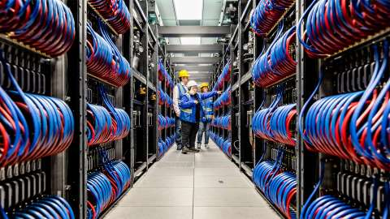

Intel Drives ‘AI Everywhere’ into Automotive Market at CES
Intel announces agreement to acquire Silicon Mobility SAS for advanced EV energy
management and new AI-enhanced family of software-defined vehicle SoCs.
On May 13, 2024, at International Supercomputing Conference 2024,
Intel, Argonne National Laboratory and Hewlett Packard Enterprise
announced that the Aurora supercomputer has broken the exascale
barrier and leads as the highest ranked supercomputer for high
performance computing and artificial intelligence convergence.
(Credit: Argonne National Laboratory)
On May 13, 2024, at International Supercomputing Conference 2024, Intel,
Argonne National Laboratory and Hewlett Packard Enterprise announced
that the Aurora supercomputer has broken the exascale barrier and leads
as the highest ranked supercomputer for high performance computing and
artificial intelligence convergence. (Credit: Argonne National
Laboratory)

On May 13, 2024, at International Supercomputing Conference 2024,
Intel, Argonne National Laboratory and Hewlett Packard Enterprise
announced that the Aurora supercomputer has broken the exascale
barrier. (Credit: Argonne National Laboratory)
On May 13, 2024, at International Supercomputing Conference 2024, Intel,
Argonne National Laboratory and Hewlett Packard Enterprise announced
that the Aurora supercomputer has broken the exascale barrier. (Credit:
Argonne National Laboratory)
What’s New: At ISC High Performance 2024, Intel announced in
collaboration with Argonne National Laboratory and Hewlett Packard Enterprise (HPE) that the
Aurora supercomputer has broken the exascale barrier at 1.012 exaflops and is the fastest AI
system in the world dedicated to AI for open science, achieving 10.6 AI exaflops. Intel will
also detail the crucial role of open ecosystems in driving AI-accelerated high performance
computing (HPC).
“The Aurora supercomputer surpassing exascale will allow it to pave the road to
tomorrow’s discoveries. From understanding climate patterns to unraveling the
mysteries of the universe, supercomputers serve as a compass guiding us toward
solving truly difficult scientific challenges that may improve humanity.”
News Highlights
Why It Matters:Designed as an AI-centric system from its inception,
Aurora will allow researchers to harness generative AI models to accelerate scientific
discovery. Significant progress has been made inArgonne’s early AI-driven research. Success stories
include mapping the human brain’s 80 billion neurons, high-energy particle physics enhanced
by deep learning, and drug design and discovery accelerated by machine learning, among
others.
Aurora Supercomputer's Details: The Aurora supercomputer is an expansive
system with 166 racks, 10,624 compute blades, 21,248 Intel® Xeon® CPU Max Series processors
and 63,744 Intel® Data Center GPU Max Series units, making it one of the world's largest GPU
clusters. Aurora also includes the largest open, Ethernet-based supercomputing interconnect
on a single system of 84,992 HPE slingshot fabric endpoints. Aurora supercomputer came in
second on the high-performance LINPACK (HPL) benchmark but broke the exascale barrier at
1.012 exaflops utilizing 9,234 nodes, only 87% of the system. Aurora supercomputer also
secured the third spot on the high-performance conjugate gradient (HPCG) benchmark at 5,612
teraflops per second (TF/s) with 39% of the machine. This benchmark aims to assess more
realistic scenarios providing insights into communication and memory access patterns, which
are important factors in real-world HPC applications. It complements benchmarks like LINPACK
by offering a comprehensive view of a system's capabilities.
How AI is Optimized:At the heart of the Aurora supercomputer is the Intel Data Center
GPU Max Series. The Intel Xe GPU architecture is foundational to the Max Series, featuring
specialized hardware like matrix and vector compute blocks optimized for both AI and HPC
tasks. The Intel Xe architecture’s design that delivers unparalleled compute performance is
the reason the Aurora supercomputer secured the top spot in the high-performance
LINPACK-mixed precision (HPL-MxP) benchmark – which best highlights the importance of AI
workloads in HPC.
The Xe architecture's parallel processing capabilities excel in managing the
intricate matrix-vector operations inherent in neural network AI computation. These compute
cores are pivotal in accelerating matrix operations crucial for deep learning models.
Complemented by Intel's suite of software tools, including Intel® oneAPI DPC++/C++ Compiler,
a rich set of performance libraries, and optimized AI frameworks and tools, the Xe
architecture fosters an open ecosystem for developers that is characterized by flexibility
and scalability across various devices and form factors.
Advancing Accelerated Computing with Open Software and Compute
Capacity:In his special session at ISC 2024, on Tuesday, May 14 at 6:45 p.m.,
(GMT+2) Hall 4, Congress Center Hamburg, Germany, CEO Andrew Richards of Codeplay, an Intel
company, will address the growing demand for accelerated computing and software in HPC and
AI. He will highlight the importance of oneAPI, offering a unified programming model across
diverse architectures. Built on open standards, oneAPI empowers developers to craft code
that seamlessly runs on different hardware platforms without extensive modifications or
vendor lock-in. This is also the goal of the Linux Foundation’s Unified Acceleration
Foundation (UXL), in which Arm, Google, Intel, Qualcomm and others are developing an open
ecosystem for all accelerators and unified heterogeneous compute on open standards to break
proprietary lock-in. The UXL Foundation is adding more members to its growing coalition.
Meanwhile, Intel® Tiber™ Developer Cloud is
expanding its compute capacity with new state-of-the-art hardware platforms and new service
capabilities allowing enterprises and developers to evaluate the latest Intel architecture,
to innovate and optimize AI models and workloads quickly, and then to deploy AI models at
scale. New hardware includes previews of Intel® Xeon® 6 E-core and P-core systems for select
customers, and large-scale Intel® Gaudi® 2-based and Intel® Data Center GPU Max Series-based
clusters. New capabilities include Intel® Kubernetes Service for cloud-native AI training
and inference workloads and multiuser accounts.
What’s Next: New supercomputers being deployed with Intel Xeon CPU Max
Series and Intel Data Center GPU Max Series technologies underscore Intel’s goal to advance
HPC and AI. Systems include Euro-Mediterranean Centre on Climate Change’s (CMCC) Cassandra
to accelerate climate change modeling; Italian National Agency for New Technologies, Energy
and Sustainable Economic Development's (ENEA) CRESCO 8 to enable breakthroughs in fusion
energy; Texas Advanced Computing Center (TACC), which is in full production to enable data
analysis in biology to supersonic turbulence flows and atomistic simulations on a wide range
of materials; as well as United Kingdom Atomic Energy Authority (UKAEA) to solve
memory-bound problems that underpin the design of future fusion powerplants.
The result from the mixed-precision AI benchmark will be foundational for
Intel’s next-generation GPU for AI and HPC, code-named Falcon Shores. Falcon Shores will
leverage the next-generation Intel Xe architecture with the best of Intel® Gaudi®. This
integration enables a unified programming interface.
Early performance results on Intel® Xeon® 6 with P-cores and Multiplexer Combined Ranks (MCR)
memory at 8800 megatransfers per second (MT/s) deliver up to 2.3x performance improvement
for real-world HPC applications, like Nucleus for European Modeling of the Ocean (NEMO),
when compared to the previous generation,1 setting a strong foundation as the preferred host
CPU choice for HPC solutions.
1 See ISC 2024 section of
intel.com/performanceindexfor workloads and configurations. Your results may
vary.
Intel technologies may require enabled hardware, software or service
activation.
Performance results are based on testing as of dates shown in configurations and may not
reflect all publicly available updates. No product or component can be absolutely
secure.
Intel does not control or audit third-party data. You should consult other
sources to evaluate accuracy.
Intel (Nasdaq: INTC) is an industry leader, creating world-changing technology that
enables global progress and enriches lives. Inspired by Moore’s Law, we continuously work to
advance the design and manufacturing of semiconductors to help address our customers’ greatest
challenges. By embedding intelligence in the cloud, network, edge and every kind of computing
device, we unleash the potential of data to transform business and society for the better. To
learn more about Intel’s innovations, go to newsroom.intel.comand intel.com.